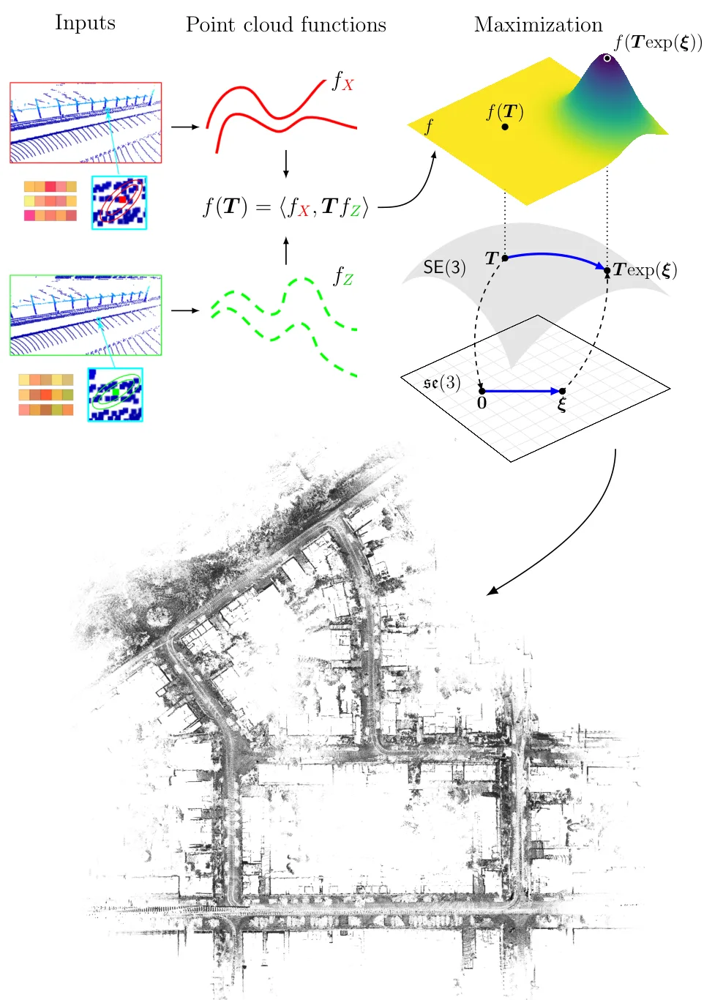
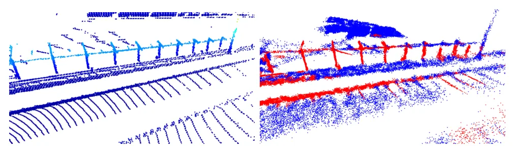
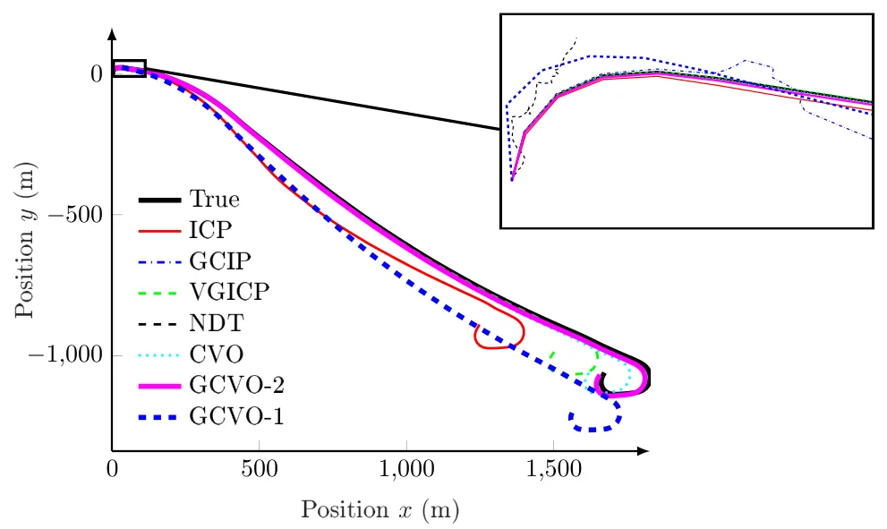
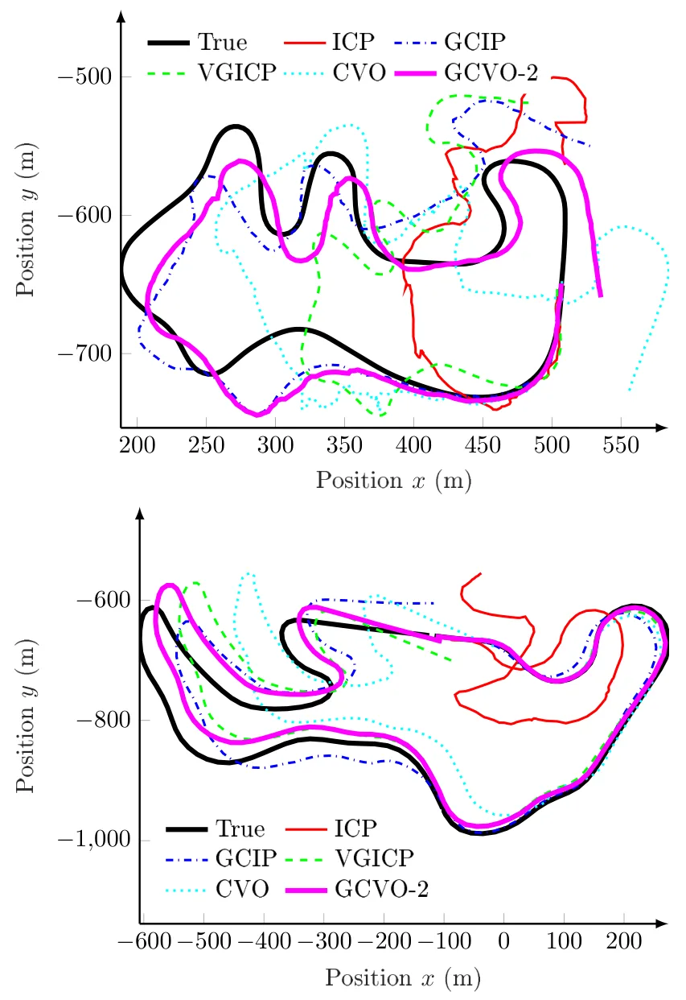
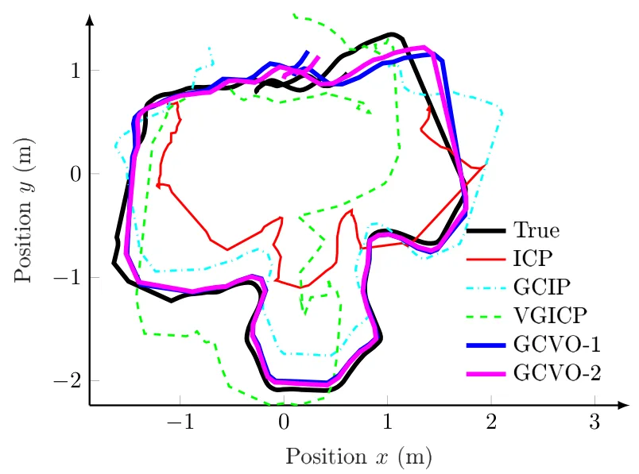
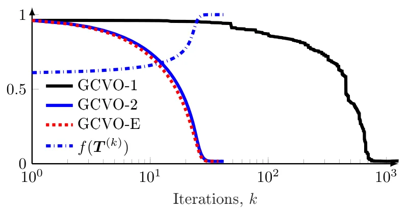
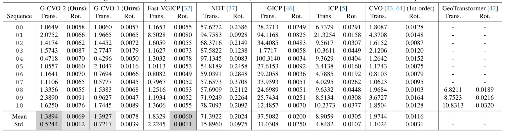
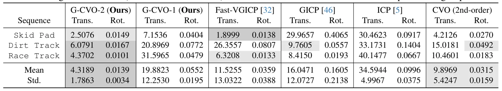
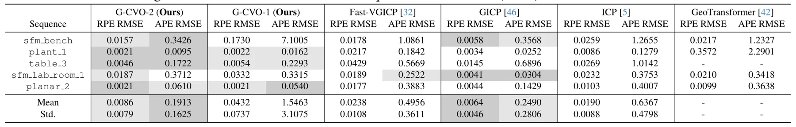
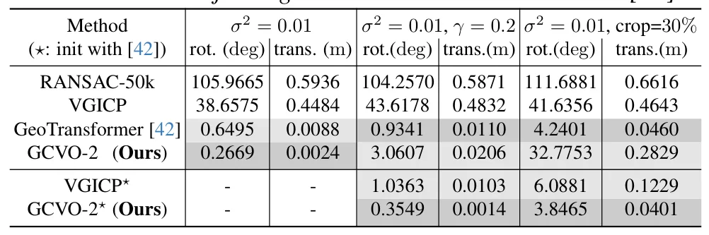

Generalized-CVO：基于二阶黎曼优化的快速无对应点局部点云配准Generalized-CVO: Fast and Correspondence-Free Local Point Cloud Registration with Second Order Riemannian Optimization
与 SLAM 前端、点云配准和 LiDAR/RGB-D tracking 高度相关；摘要给出 10× solver 加速和 >55% 漂移降低，工程潜力强。
一句话工作总结
Generalized-CVO 用各向异性 RKHS 表示和二阶黎曼优化做无对应点点云配准，直接服务 LiDAR/RGB-D 里程计前端。
摘要
本文提出一种快速、无需显式对应关系的局部点云配准方法，结合几何表面结构与再生核希尔伯特空间（RKHS）嵌入。方法把点云表示为连续函数，并为每个点使用编码局部几何的各向异性核，从而在表面法向上强化对齐，在切向上放宽约束。为求解配准问题，作者提出带近似黎曼 Hessian 的二阶流形优化，相比以往 correspondence-free RKHS 方法中的一阶 solver 最高可加速 10 倍。实验覆盖室内外 LiDAR 与 RGB-D tracking、物体配准和全局初始化后的精配准；在驾驶域特征稀疏 LiDAR tracking 中，平移与旋转漂移均降低超过 55%。
We propose a fast and correspondence-free local point cloud registration method that leverages geometric surface structure and reproducing kernel Hilbert space (RKHS) embeddings. The method represents point clouds as continuous functions with point-wise anisotropic kernels that encode local geometry. This formulation improves alignment along surface normals while relaxing alignment along tangential directions. To solve the resulting registration problem, we propose a second-order on-manifold optimization scheme with approximate Riemannian Hessians, achieving a speedup of up to 10x over the first-order solvers used in prior correspondence-free RKHS-based methods. We demonstrate improved frame-to-frame LiDAR and RGB-D tracking accuracy across diverse indoor and outdoor datasets. On a LiDAR tracking registration task in the driving domain, we achieve a reduction of $>55\%$ in both translational and rotational drift in challenging feature-sparse environments. On object registration benchmarks, we show improved robustness over ICP-based methods and further gains when refining global initialization, particularly under moderate misalignment.
中文解读摘录
- 作者：Ray Zhang, Marcus Greiff, Thomas Lew, John Subosits；类别：cs.CV / cs.AI / cs.RO；发布日期：2026-06-09；备注：16 pages, 12 figures；采集 score=14
- 核心问题：局部点云配准在 LiDAR/RGB-D tracking 中通常依赖 correspondences 或 ICP 类最近邻，特征稀疏、退化或外观变化时容易漂移；RKHS/CVO 类 correspondence-free 方法更稳但一阶优化速度偏慢。
- 方法亮点：把点云表示为带 point-wise anisotropic kernels 的连续函数，核函数编码局部几何，使法向方向更强约束、切向方向更宽松；优化上提出带近似 Riemannian Hessian 的二阶流形优化。
- 结果信号：相对以往一阶 RKHS 配准 solver 最高加速约 10×；在驾驶域 LiDAR tracking 的特征稀疏场景中，平移和旋转漂移均降低超过 55%；RGB-D 与物体配准 benchmark 也显示比 ICP 类方法更稳。
- 关注价值：这是今天最接近 SLAM 前端/里程计的工作。若开源或实现成本可控，值得尝试替换/增强 frame-to-frame LiDAR odometry、RGB-D odometry 和全局初始化后的精配准模块。
图表/页面预览
{kind=link}

{kind=link}

{kind=link}

{kind=link}

{kind=link}

{kind=link}

{kind=link}

{kind=link}

{kind=link}

{kind=link}
